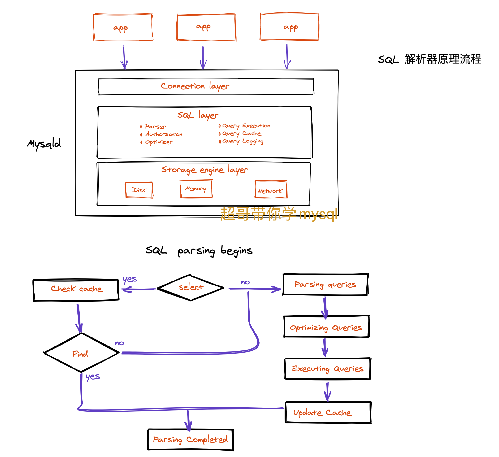
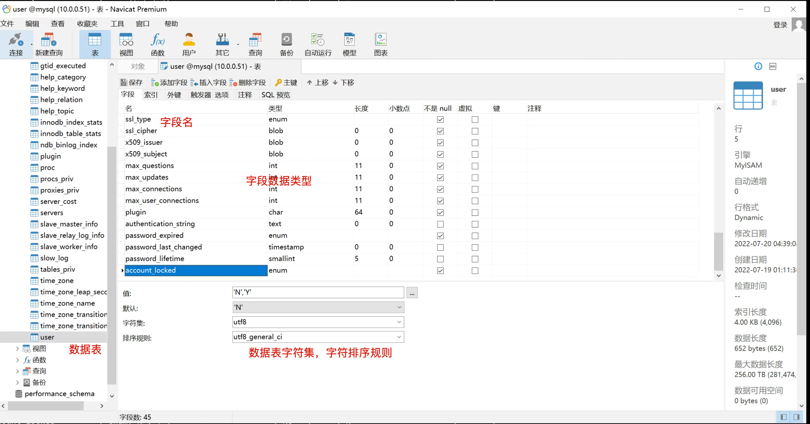
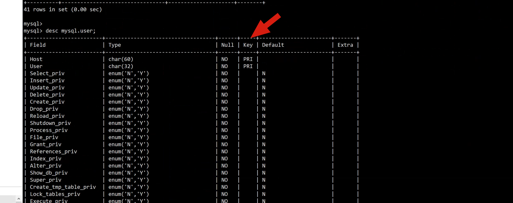
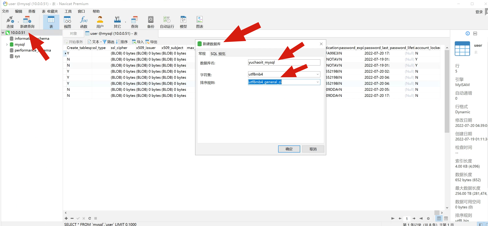
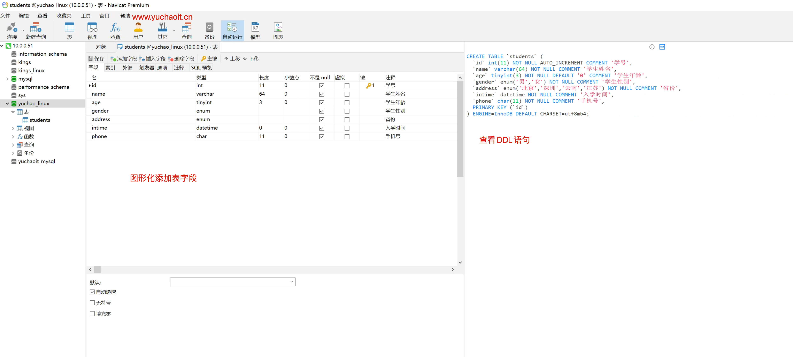
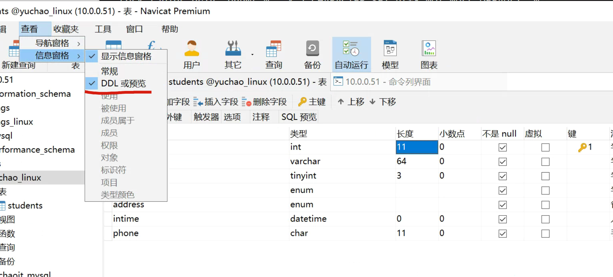
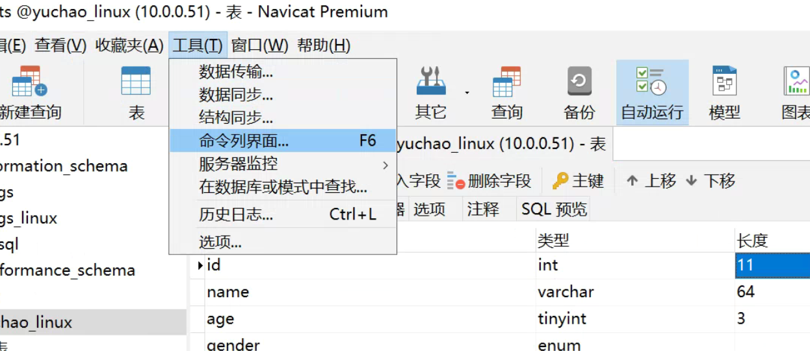

02-4-SQL语句一
SQL练习，可以先导入超哥准备好的数据库文件。
https://github.com/datacharmer/test_db 随意导入，练习SQL玩法
还有个 yuanlai_mysql.sql
1.MySQl核心SQL语句
SQL，英文全称为Structured Query Language，中文意思是结构化查询语言，它是一种对关系型数据库中的数据进行定义和操作的语言，是大多数关系型数据库管理系统所支持的工业标准语言。
就像我们和bash打交道，要遵循bash的语法，然后可以对linux的数据，进行增删改查。
我们使用mysql这个工具，进行数据管理，就得遵循SQL专门的语法，进行存储、查询、更新、管理数据库内容。
SQL帮助我们不用关注数据到底是怎么在磁盘上存储的，通过高级SQL语言，能够非常简单的对数据管理，以及强大的灵活性，不同的数据库的SQL会有些差别。
用于关系型数据库，mysql这个软件中专有的查数据的语言，叫做结构化查询语言。
2.有关SQL的分类
DDL数据定义，全称为Data Definition Language
DQL数据查询语言，DQL，全称为Data Query Language
DCL授权控制,全称为Data Control Language
DML数据操作语言，DML，全称为Data Manipulation Language，中文为数据操作语言
DQL数据查询语言
DQL，全称为Data Query Language，其语句也称为“数据检索语句”，作用是从表中获取数据，确定数据应怎样在应用程序中给出。
关键字SELECT是DQL（也是所有SQL）用得最多的，其他DQL常用的保留字有WHERE、ORDER BY、GROUP BY和HAVING。这些单词就是我们这一节要学习的SQL语句，进行查询。
这些DQL保留字常与其他类型的SQL语句一起使用。具体语句示例如下：
# 登录数据库
[root@mysql-server56 ~]#
[root@mysql-server56 ~]# mysql -S /data/3307/mysql.sock
ERROR 1045 (28000): Access denied for user 'root'@'localhost' (using password: NO)
[root@mysql-server56 ~]# mysql -pyuchao7777 -S /data/3307/mysql.sock
Warning: Using a password on the command line interface can be insecure.
Welcome to the MySQL monitor. Commands end with ; or \g.
Your MySQL connection id is 4
Server version: 5.6.40-log MySQL Community Server (GPL)
Copyright (c) 2000, 2018, Oracle and/or its affiliates. All rights reserved.
Oracle is a registered trademark of Oracle Corporation and/or its
affiliates. Other names may be trademarks of their respective
owners.
Type 'help;' or '\h' for help. Type '\c' to clear the current input statement.
# 这句SQL翻译是从mysql库下的user表，查询user、host字段的数据、且对user排序
# 这就像我们用excel一样
mysql> select user,host from mysql.user order by user;
+------+----------------+
| user | host |
+------+----------------+
| | localhost |
| | mysql-server56 |
| root | localhost |
| root | mysql-server56 |
| root | 127.0.0.1 |
| root | ::1 |
| root | % |
+------+----------------+
7 rows in set (0.00 sec)
DML数据操作语言
DML，全称为Data Manipulation Language，中文为数据操作语言。
其语句的关键字为INSERT、UPDATE和DELETE。它们分别用于添加、修改和删除表中的行（数据）。具体语句示例如下：
# 删除这些无用的用户
# 发现删除了2个空用户
mysql> delete from mysql.user where user=' ';
Query OK, 2 rows affected (0.00 sec)
mysql> delete from mysql.user where user='root' and host='mysql-server56';
Query OK, 1 row affected (0.00 sec)
mysql> delete from mysql.user where user='root' and host='::1';
Query OK, 1 row affected (0.00 sec)
# 剩下来的用户
mysql> select user,host from mysql.user order by user;
+------+-----------+
| user | host |
+------+-----------+
| root | localhost |
| root | 127.0.0.1 |
| root | % |
+------+-----------+
3 rows in set (0.00 sec)
TPL事务
全称为Transaction Processing Language，TPL语句用于确保被DML语句影响的表的所有行能够及时得到更新。TPL语句包括BEGIN TRANSACTION、COMMIT和ROLLBACK。
DCL授权控制
全称为Data Control Language，这类语句通过GRANT或REVOKE授权用户许可，确定单个用户和用户组对数据库对象的访问。
某些RDBMS可用GRANT或REVOKE控制对表中单个列的访问。
mysql> create user pyyu@'%' identified by 'pyyu668';
Query OK, 0 rows affected (0.01 sec)
# 普通用户被创建的时候，默认有USAGE权限，只能用于登录数据库，无其他权限
mysql> show grants for pyyu@'%';
+-----------------------------------------------------------------------------------------------------+
| Grants for pyyu@% |
+-----------------------------------------------------------------------------------------------------+
| GRANT USAGE ON *.* TO 'pyyu'@'%' IDENTIFIED BY PASSWORD '*4896EFB7643861D41A6BF9CD6FF012B785508323' |
+-----------------------------------------------------------------------------------------------------+
1 row in set (0.00 sec)
# 只给pyyu用户查看luffy数据库的查询权限
mysql> grant select on luffy.* to 'pyyu'@'%' with grant option;
Query OK, 0 rows affected (0.00 sec)
# 查询该用户的权限
mysql> show grants for pyyu@'%';
+-----------------------------------------------------------------------------------------------------+
| Grants for pyyu@% |
+-----------------------------------------------------------------------------------------------------+
| GRANT USAGE ON *.* TO 'pyyu'@'%' IDENTIFIED BY PASSWORD '*4896EFB7643861D41A6BF9CD6FF012B785508323' |
| GRANT SELECT ON `luffy`.* TO 'pyyu'@'%' WITH GRANT OPTION |
+-----------------------------------------------------------------------------------------------------+
2 rows in set (0.00 sec)
DDL数据定义
全称为Data Definition Language，其语句包括动词CREATE、DROP和ALTER。可使用该语言在数据库中创建新库表或删除库表，或者为表添加字段、索引等。
# 这句SQL意为创建luffy数据库，且设置数据库编码为utf8，且大小写不敏感，a和A一样处理
mysql> create database if not exists luffy default charset utf8 collate utf8_general_ci;
Query OK, 1 row affected (0.01 sec)
mysql> show databases;
+--------------------+
| Database |
+--------------------+
| information_schema |
| luffy |
| mysql |
| performance_schema |
| test |
+--------------------+
5 rows in set (0.01 sec)
CCL指针控制语言
CCL，全称为CURSOR Control Language，它的语句（像DECLARE CURSOR、FETCH INTO和UPDATE WHERE CURRENT）用于对一个或多个表的单独行进行操作。
运维和开发--SQL
运维主要关心数据库的架构维护、数据备份、基础数据的管理、但是一般不会修改数据表的结构
主要以DDL类别工作为主，也就是数据定义，运维和开发都得掌握
- create
- alter
- drop
查看DDL语句具体信息
mysql> ? Data Definition
You asked for help about help category: "Data Definition"
For more information, type 'help <item>', where <item> is one of the following
topics:
ALTER DATABASE
ALTER EVENT
ALTER FUNCTION
ALTER LOGFILE GROUP
ALTER PROCEDURE
ALTER SERVER
ALTER TABLE
ALTER TABLESPACE
ALTER VIEW
CONSTRAINT
CREATE DATABASE
CREATE EVENT
CREATE FUNCTION
CREATE INDEX
CREATE LOGFILE GROUP
CREATE PROCEDURE
CREATE SERVER
CREATE TABLE
CREATE TABLESPACE
CREATE TRIGGER
CREATE VIEW
DROP DATABASE
DROP EVENT
DROP FUNCTION
DROP INDEX
DROP PROCEDURE
DROP SERVER
DROP TABLE
DROP TABLESPACE
DROP TRIGGER
DROP VIEW
RENAME TABLE
TRUNCATE TABLE
DCL数据授权控制
一般是运维操作的多些
- grant
- revoke
- commit
- Rollback
mysql> ? Account Management
You asked for help about help category: "Account Management"
For more information, type 'help <item>', where <item> is one of the following
topics:
ALTER USER
CREATE USER
DROP USER
GRANT
RENAME USER
REVOKE
SET PASSWORD
DML数据操作语言
开发要重点掌握的SQL，运维熟悉就好，也就是DML数据操作语言，因为网站有各式各样的数据写入、数据读取操作，这是开发对于表的设计，是开发必须重点掌握的技能。
运维无须像开发一样，了解各种业务表的结构、设计，只需要熟悉查询数据操作。
也就是DML语句
- select
- insert
- delete
- update
mysql> ? Data Manipulation
You asked for help about help category: "Data Manipulation"
For more information, type 'help <item>', where <item> is one of the following
topics:
CALL
DELETE
DO
DUAL
HANDLER
INSERT
INSERT DELAYED
INSERT SELECT
JOIN
LOAD DATA
LOAD XML
REPLACE
SELECT
UNION
UPDATE
补充：SQL底层解析器
目前大家都知道输入一段正确的SQL语句，mysql就可以执行，拿到结果，那么这个背后，发生了什么，听超哥给大家聊聊。
也就是你输入mysql的连接命令，连接成功后，输入SQL，这期间底层发生了什么。
大致顺序是
1.应用程序连接mysql，建立连接
2.SQL进行解析
3.进入存储引擎找数据，在磁盘、内存中读取数据，依次返回
4.数据返回给用户

SQL解析流程
连接层
- 应用程序（php，python，代码）连接mysql时，首先会进过连接池（创建数据库连接是很耗时且消耗资源的，数据库会提供连接池，保持连接，允许应用程序重复使用一个现有的连接，无须重复新建，省资源，减轻数据库压力），建立连接后，进入SQL解析层
SQL层
这一层是解析SQL语句，首先判断SQL正确性，是否符合DDL、DML、DCL语句规则
根据不同的类型，命令分发模块转发给对应的模块处理
例如接收的是select语句，就是DML查询，既然查询，就会去查找是否有缓存
有缓存则直接返回给应用程序
如果没有缓存，就进入了SQL的解析流程
(Parsing queries)- 解析这件事由Parser解析器来对SQL进行词法分析（因为SQL可以是一个组合的，复杂、较长的语句），最终分析出一个或者多个SQL语句的执行计划
得到执行计划后，还不会立即执行，因为解析器可能给出了SQL的多种执行方式，还要再进一步的判断，怎么执行才是最高效的。
- mysql内部有一个查询优化器（Optimizer）根据自身的算法，找到一个最高效的方式执行SQL（例如有合理索引的那一条SQL）
当优化器确定了执行计划，是不是就可以立即执行了?不是。。（大家可能回郁闷了，超哥你这么墨迹呢？）因为即使你确定了SQL可以执行了，但是你是不是有权限执行，对把。
在SQL层内部对权限也检查后，SQL语句终于执行了，最后把执行后的结果，交给最底层的存储引擎接口（发动机），存储引擎和操作系统交互，读取到磁盘上的数据（发动机喝油开始干活了）。
最终SQL执行完毕，本次获取的数据，常规下更新到缓存中，便于下次加速查询。
这个查询过程的原理，是希望大家心中有个概念，查询过程会发生什么事，具体落地到操作，mysql还提供了大量的SQL语句，提供我们对数据库进行性能分析。后面超哥会给大家讲！！
3.数据库对象
库
数据库名
数据库属性、字符集、校对规则（大小写等）
例子
mysql> show databases;
+--------------------+
| Database |
+--------------------+
| information_schema |
| mysql |
| performance_schema |
| sys |
+--------------------+
4 rows in set (0.00 sec)
mysql> show create database mysql;
+----------+------------------------------------------------------------------+
| Database | Create Database |
+----------+------------------------------------------------------------------+
| mysql | CREATE DATABASE `mysql` /*!40100 DEFAULT CHARACTER SET latin1 */ |
+----------+------------------------------------------------------------------+
1 row in set (0.00 sec)
表
数据库.数据表名
列
列名
列属性：数据类型、约束条件、其他属性
行
字段名
字段属性
例
mysql> select Host,User from mysql.user;
+-----------+---------------+
| Host | User |
+-----------+---------------+
| 10.0.0.% | dev01 |
| 10.0.0.% | yuchao02 |
| 10.0.0.7 | bob01 |
| localhost | chaoge01 |
| localhost | mysql.session |
| localhost | mysql.sys |
| localhost | root |
| localhost | yuchao01 |
+-----------+---------------+
8 rows in set (0.00 sec)
字符集
我们如果想正确的读写mysql的中文数据，需要保证服务端、客户端的字符集一致
服务端是我们的mysql，客户端的形式有很多了，可能是xshell，navicat，程序等等
服务端mysql的编码设置与查看
# 查看mysql支持哪些字符集
mysql> show character set;
# 查看当前mysql服务端，默认是什么字符集
# 字符集（character set）：定义了字符以及字符的编码。
mysql> show variables like '%char%';
+--------------------------+----------------------------------+
| Variable_name | Value |
+--------------------------+----------------------------------+
| character_set_client | utf8 |
| character_set_connection | utf8 |
| character_set_database | latin1 |
| character_set_filesystem | binary |
| character_set_results | utf8 |
| character_set_server | latin1 |
| character_set_system | utf8 |
| character_sets_dir | /opt/mysql5.7.28/share/charsets/ |
+--------------------------+----------------------------------+
8 rows in set (0.00 sec)
# 查看mysql默认的字符序
# 字符序（collation）：定义了字符的比较规则。
mysql> show variables like 'collation%';
+----------------------+-------------------+
| Variable_name | Value |
+----------------------+-------------------+
| collation_connection | utf8_general_ci |
| collation_database | latin1_swedish_ci |
| collation_server | latin1_swedish_ci |
+----------------------+-------------------+
3 rows in set (0.00 sec)
阿里技术专家的博客
https://www.cnblogs.com/chyingp/p/mysql-character-set-collation.html
常用字符集，字符序组合
utf-8 最大支持3字节的字符，也就是中文汉字，不支持emoji符号
utf8mb4 最大支持4字节的字符，支持emoji字符
mysql8.0之前，默认字符集是latin1
8.0之后默认utf8mb4 ，目前主流网站肯定都是支持表情符号的，如emoji 😄这类。
4.数据表（数据属性）

数字类型
MySQL 中定义数据字段的类型对你数据库的优化是非常重要的。
MySQL 支持多种类型，大致可以分为三类：数值、日期/时间和字符串(字符)类型。
MySQL 支持所有标准 SQL 数值数据类型。
这些类型包括严格数值数据类型(INTEGER、SMALLINT、DECIMAL 和 NUMERIC)，以及近似数值数据类型(FLOAT、REAL 和 DOUBLE PRECISION)。
关键字INT是INTEGER的同义词，关键字DEC是DECIMAL的同义词。
BIT数据类型保存位字段值，并且支持 MyISAM、MEMORY、InnoDB 和 BDB表。
作为 SQL 标准的扩展，MySQL 也支持整数类型 TINYINT、MEDIUMINT 和 BIGINT。下面的表显示了需要的每个整数类型的存储和范围。
| 类型 | 大小 | 范围（有符号） | 范围（无符号） | 用途 |
|---|---|---|---|---|
| TINYINT | 1 Bytes | (-128，127) | (0，255) | 小整数值 |
| SMALLINT | 2 Bytes | (-32 768，32 767) | (0，65 535) | 大整数值 |
| MEDIUMINT | 3 Bytes | (-8 388 608，8 388 607) | (0，16 777 215) | 大整数值 |
| INT或INTEGER | 4 Bytes | (-2 147 483 648，2 147 483 647) | (0，4 294 967 295) | 大整数值 |
| BIGINT | 8 Bytes | (-9,223,372,036,854,775,808，9 223 372 036 854 775 807) | (0，18 446 744 073 709 551 615) | 极大整数值 |
| FLOAT | 4 Bytes | (-3.402 823 466 E+38，-1.175 494 351 E-38)，0，(1.175 494 351 E-38，3.402 823 466 351 E+38) | 0，(1.175 494 351 E-38，3.402 823 466 E+38) | 单精度 浮点数值 |
| DOUBLE | 8 Bytes | (-1.797 693 134 862 315 7 E+308，-2.225 073 858 507 201 4 E-308)，0，(2.225 073 858 507 201 4 E-308，1.797 693 134 862 315 7 E+308) | 0，(2.225 073 858 507 201 4 E-308，1.797 693 134 862 315 7 E+308) | 双精度 浮点数值 |
| DECIMAL | 对DECIMAL(M,D) ，如果M>D，为M+2否则为D+2 | 依赖于M和D的值 | 依赖于M和D的值 | 小数值 |
字符串类型
字符串类型指CHAR、VARCHAR、BINARY、VARBINARY、BLOB、TEXT、ENUM和SET。该节描述了这些类型如何工作以及如何在查询中使用这些类型。
| 类型 | 大小 | 用途 |
|---|---|---|
| CHAR | 0-255 bytes | 定长字符串 |
| VARCHAR | 0-65535 bytes | 变长字符串 |
| TINYBLOB | 0-255 bytes | 不超过 255 个字符的二进制字符串 |
| TINYTEXT | 0-255 bytes | 短文本字符串 |
| BLOB | 0-65 535 bytes | 二进制形式的长文本数据 |
| TEXT | 0-65 535 bytes | 长文本数据 |
| MEDIUMBLOB | 0-16 777 215 bytes | 二进制形式的中等长度文本数据 |
| MEDIUMTEXT | 0-16 777 215 bytes | 中等长度文本数据 |
| LONGBLOB | 0-4 294 967 295 bytes | 二进制形式的极大文本数据 |
| LONGTEXT | 0-4 294 967 295 bytes | 极大文本数据 |
注意：char(n) 和 varchar(n) 中括号中 n 代表字符的个数，并不代表字节个数，比如 CHAR(30) 就可以存储 30 个字符。
CHAR 和 VARCHAR 类型类似，但它们保存和检索的方式不同。它们的最大长度和是否尾部空格被保留等方面也不同。在存储或检索过程中不进行大小写转换。
BINARY 和 VARBINARY 类似于 CHAR 和 VARCHAR，不同的是它们包含二进制字符串而不要非二进制字符串。也就是说，它们包含字节字符串而不是字符字符串。这说明它们没有字符集，并且排序和比较基于列值字节的数值值。
BLOB 是一个二进制大对象，可以容纳可变数量的数据。有 4 种 BLOB 类型：TINYBLOB、BLOB、MEDIUMBLOB 和 LONGBLOB。它们区别在于可容纳存储范围不同。
有 4 种 TEXT 类型：TINYTEXT、TEXT、MEDIUMTEXT 和 LONGTEXT。对应的这 4 种 BLOB 类型，可存储的最大长度不同，可根据实际情况选择。
日期和时间类型
表示时间值的日期和时间类型为DATETIME、DATE、TIMESTAMP、TIME和YEAR。
每个时间类型有一个有效值范围和一个"零"值，当指定不合法的MySQL不能表示的值时使用"零"值。
TIMESTAMP类型有专有的自动更新特性，将在后面描述。
| 类型 | 大小 ( bytes) | 范围 | 格式 | 用途 |
|---|---|---|---|---|
| DATE | 3 | 1000-01-01/9999-12-31 | YYYY-MM-DD | 日期值 |
| TIME | 3 | '-838:59:59'/'838:59:59' | HH:MM:SS | 时间值或持续时间 |
| YEAR | 1 | 1901/2155 | YYYY | 年份值 |
| DATETIME | 8 | 1000-01-01 00:00:00/9999-12-31 23:59:59 | YYYY-MM-DD HH:MM:SS | 混合日期和时间值 |
| TIMESTAMP | 4 | 1970-01-01 00:00:00/2038结束时间是第 2147483647 秒，北京时间 2038-1-19 11:14:07，格林尼治时间 2038年1月19日 凌晨 03:14:07 | YYYYMMDD HHMMSS | 混合日期和时间值，时间戳 |
5.数据表（列约束）

主键 primary key 简称pk
特点
1. 一张表，只能有一个pk，可以由多个列构成
2. 等于 唯一约束（Unique Key）和非空约束（NOT NULL） 的组合
3. 建议每张表都要设置主键，便于索引的应用，一般都以id列为主键，是默认自增的数字列。
非空 not null
该字段必须写入数据
建议每一列都设置，便于索引应用
唯一性 unique key
该列的值不得重复，你比如存储身份证号的列，每一个人的号码都是唯一，不得重复，得必须有数据的
无符号 unsingned
针对数字数据类型而言，是否有符号，如负数
其他属性
1.表属性
engine，存储引擎类型，默认是innodb
charset，字符集，utf8mb4
comment，注释
列属性
default ，也就是字段的默认值，一般和not null不为空结合用，设置个默认值，如性别不选，默认是男
auto_increment，数字字段，自增长，一般配合主键使用，如用户信息表，id依次的+1
comment，列的注释
1.DDL数据库定义语言
DDL的特点是对数据库内部的对象进行创建、修改、删除等操作，不涉及对表中内容的操作和更改。
这部分是运维人员或DBA需要熟练掌握的内容，开发人员了解即可。
全称为Data Definition Language，其语句包括动词CREATE、DROP和ALTER。可使用该语言在数据库中创建新库表或删除库表，或者为表添加字段、索引等。
创建数据库
不得已数字开头，大小写不敏感
1.1 数据库部分
1. 库名不得以数字开头
2. 库名和业务有关，见名知意
3. 库名不得有大写字母
都是为了多系统平台的兼容性
4.创建数据库需要有指定的字符集，建议设定默认规则就是utf8mb4
5.生产环境下，禁用普通用户的drop database权限
1.2 创建数据库
完整写法（可以解决数据库已存在的冲突）
create database if not exists kings default charset utf8mb4 ;
基本写法
create database yuchao_linux charset utf8;
create database yuchao_linux charset utf8mb4;
1.3 查看数据库
mysql> show databases;
+--------------------+
| Database |
+--------------------+
| information_schema | # 系统自带库，存储数据库内置信息
| kings |
| luffy |
| mysql | # 自带库，存储用户信息，授权等
| performance_schema | # 存储和性能相关的数据
| test |
+--------------------+
# 查看show create帮助信息
help show create database
具体用法，查看建库的语句，可以复用
show create database yuchao_linux;
show create database kings;
1.3.1 字符集和校验规则
# 创建数据库以及指定字符集，校验规则
1. 字符集，character set，就是一套表示字符的符号和这些的符号的底层编码；
2. 校验规则，则是在字符集内用于比较字符的一套规则。
# 查看当前数据库支持的字符集
# maxlen表示要用最大多少个字节来存储字符集的单个词，default collation表示该字符集的默认校验规则。
show character set;
# 查询mysql数据库所支持字符集的校验规则
show collation;
# 先简单了解即可，在遇见不同语言，中英文，以及包含特殊符号的环境下，就需要查阅，调整数据库编码了
主流用法组合
utf8mb4 字符集
utf8mb4_general_ci排序规则
1.4 修改数据库字符集
mysql> show create database yuchao_linux;
+--------------+-----------------------------------------------------------------------+
| Database | Create Database |
+--------------+-----------------------------------------------------------------------+
| yuchao_linux | CREATE DATABASE `yuchao_linux` /*!40100 DEFAULT CHARACTER SET utf8 */ |
+--------------+-----------------------------------------------------------------------+
1 row in set (0.00 sec)
# 修改数据库编码
mysql> alter database yuchao_linux charset utf8mb4;
Query OK, 1 row affected (0.00 sec)
mysql> show create database yuchao_linux;
+--------------+--------------------------------------------------------------------------+
| Database | Create Database |
+--------------+--------------------------------------------------------------------------+
| yuchao_linux | CREATE DATABASE `yuchao_linux` /*!40100 DEFAULT CHARACTER SET utf8mb4 */ |
+--------------+--------------------------------------------------------------------------+
1 row in set (0.00 sec)
1.5 设置mysqld默认字符集
该配置文件
[root@db-51 ~]#cat /etc/my.cnf
[mysqld]
character_set_server=utf8mb4
port=3306
user=mysql
basedir=/opt/mysql
datadir=/www.yuchaoit.cn/mysql_3306
socket=/tmp/mysql.sock
[mysql]
socket=/tmp/mysql.sock
重启
[root@db-51 ~]#systemctl restart mysql
再次创建数据库试试
mysql> create database kings_linux;
Query OK, 1 row affected (0.00 sec)
mysql> show create database kings_linux;
+-------------+-------------------------------------------------------------------------+
| Database | Create Database |
+-------------+-------------------------------------------------------------------------+
| kings_linux | CREATE DATABASE `kings_linux` /*!40100 DEFAULT CHARACTER SET utf8mb4 */ |
+-------------+-------------------------------------------------------------------------+
1 row in set (0.00 sec)
1.6 数据表部分
表定义规范
创建表
1.创建表
a.表名的规范
不得数字开头
见名知意，表和业务有关，参考wordpress等数据库命名规范，如yuchaoit_post
不得大写字母
别超过18个字符
别是mysql默认关键字
b. 默认存储引擎是innodb
c. 5.7之后，数据表字符集，默认utf8mb4
d. 数据表的字段（列）也和业务有关，字符别超过18个
e. 数据表的字段（列）要选择合适的、足够容量、省磁盘空间的数据类型
f. 数据表的字段（列）建议都not null
g. 数据表的字段（列）建议都要有注释
h. 数据表的字段（列） 每张数据表都建议加主键
i. 针对not null的列，一般给与默认值
j. 给每张表添加注释
修改表
1. 添加数据表的字段（列），建议用追加方式
2. 修改列的属性，建议用modify语句
3. 修改表的属性，建议在业务不繁忙的时候修改
1.7 生产级SQL审核工具
dba专用
https://hanchuanchuan.github.io/goInception/
1.8 图形化工具navicat实战
创建库

mysql> create database d1;
Query OK, 1 row affected (0.00 sec)
mysql> show create database d1;
+----------+---------------------------------------------------------------+
| Database | Create Database |
+----------+---------------------------------------------------------------+
| d1 | CREATE DATABASE `d1` /*!40100 DEFAULT CHARACTER SET latin1 */ |
+----------+---------------------------------------------------------------+
1 row in set (0.00 sec)
mysql>
# 该特殊符号 /*!40100 是mysql为了兼容不同版本的字符集，自动生成的一个注释信息，忽略即可，不需要你去写
创建表

强烈建议大家的玩法，先用SQL，再去用图形化创建。
以后熟练SQL了，可以直接图形化创建，然后转为SQL，便于命令行用。
如何创建表的语法
help create table;
CREATE TABLE `students` (
`id` int(11) NOT NULL AUTO_INCREMENT COMMENT '学号',
`name` varchar(64) NOT NULL COMMENT '学生姓名',
`age` tinyint(3) NOT NULL DEFAULT '0' COMMENT '学生年龄',
`gender` enum('男','女') NOT NULL COMMENT '学生性别',
`address` enum('北京','深圳','云南','江苏') NOT NULL COMMENT '省份',
`intime` datetime NOT NULL COMMENT '入学时间',
`phone` char(11) NOT NULL COMMENT '手机号',
PRIMARY KEY (`id`)
) ENGINE=InnoDB DEFAULT CHARSET=utf8mb4;

表字段，数据类型
int 整数，有符号 -2^31 到 2^31-1 （-2147483648 ~ 2147483647 ）
tinyint 最小整数，-128 到 127，如年龄
varchar 字符类型，变化长度，如身份证
char 字符类型，固定长度
enum 枚举类型，如性别二选一，三选一行不行？
datetime 时间类型，如下单时间，发表文章时间，注册时间等
# 简单玩一玩数据类型
# 玩玩int范围
mysql> create table t1(id int);
Query OK, 0 rows affected (0.01 sec)
mysql> insert into t1 values(2147483647);
Query OK, 1 row affected (0.01 sec)
mysql> insert into t1 values(2147483648);
ERROR 1264 (22003): Out of range value for column 'id' at row 1
mysql> insert into t1 values(-2147483648);
Query OK, 1 row affected (0.00 sec)
mysql> insert into t1 values(-2147483649);
ERROR 1264 (22003): Out of range value for column 'id' at row 1
# 玩玩tinyint
create table t2(age tinyint);
insert into t2 values(128);
insert into t2 values(127);
# 玩玩char固定长度
create table t3(name char(4)) charset utf8;
insert into t3 values('jntmm');
insert into t3 values('jntmm');
# 玩玩枚举类型
create table t4(gender enum('male','female','unknown'));
insert into t4 values('cxk');
insert into t4 values('male');
insert into t4 values('female');
insert into t4 values('unknown');
# 玩玩日期类型datetime
create table t5(in_school_time datetime );
查看插入数据的语法
? datetime
insert into t5 values("1993-1-25");
insert into t5 values("1993/1/25");
insert into t5 values("199333/1/25 ");
insert into t5 values("1993/133/25");
insert into t5 values("1993133/25");
insert into t5 values("14-3-1933");
insert into t5 values("3-2-2 3:22:11");
命令行工具

# 查看当前客户端
mysql> select user();
+-------------------+
| user() |
+-------------------+
| yuchao02@10.0.0.1 |
+-------------------+
1 row in set (0.01 sec)
# 查看所有库
mysql> show databases;
+--------------------+
| Database |
+--------------------+
| information_schema |
| kings |
| kings_linux |
| mysql |
| performance_schema |
| sys |
| yuchao_linux |
| yuchaoit_mysql |
+--------------------+
8 rows in set (0.02 sec)
# 查看建库语句SQL
mysql> show create database yuchaoit_mysql;
+----------------+----------------------------------------------------------------------------+
| Database | Create Database |
+----------------+----------------------------------------------------------------------------+
| yuchaoit_mysql | CREATE DATABASE `yuchaoit_mysql` /*!40100 DEFAULT CHARACTER SET utf8mb4 */ |
+----------------+----------------------------------------------------------------------------+
1 row in set (0.02 sec)
mysql>
# 查看建表语句SQL
mysql> show create table students;
+----------+----------------------------------------------------------------------------------------------------------------------------------------------------------------------------------------------------------------------------------------------------------------------------------------------------------------------------------------------------------------------------------------------------------------------------------------------------------------------------------+
| Table | Create Table |
+----------+----------------------------------------------------------------------------------------------------------------------------------------------------------------------------------------------------------------------------------------------------------------------------------------------------------------------------------------------------------------------------------------------------------------------------------------------------------------------------------+
| students | CREATE TABLE `students` (
`id` int(11) NOT NULL AUTO_INCREMENT COMMENT '学号',
`name` varchar(64) NOT NULL COMMENT '学生姓名',
`age` tinyint(3) NOT NULL DEFAULT '0' COMMENT '学生年龄',
`gender` enum('男','女') NOT NULL COMMENT '学生性别',
`address` enum('北京','深圳','云南','江苏') NOT NULL COMMENT '省份',
`intime` datetime NOT NULL COMMENT '入学时间',
`phone` char(11) NOT NULL COMMENT '手机号',
PRIMARY KEY (`id`)
) ENGINE=InnoDB DEFAULT CHARSET=utf8mb4 |
+----------+----------------------------------------------------------------------------------------------------------------------------------------------------------------------------------------------------------------------------------------------------------------------------------------------------------------------------------------------------------------------------------------------------------------------------------------------------------------------------------+
1 row in set (0.04 sec)
# 查看当前在那个库
mysql> select database();
+--------------+
| database() |
+--------------+
| yuchao_linux |
+--------------+
1 row in set (0.04 sec)
# 查看表结构
mysql> desc students;
+---------+-----------------------------------+------+-----+---------+----------------+
| Field | Type | Null | Key | Default | Extra |
+---------+-----------------------------------+------+-----+---------+----------------+
| id | int(11) | NO | PRI | NULL | auto_increment |
| name | varchar(64) | NO | | NULL | |
| age | tinyint(3) | NO | | 0 | |
| gender | enum('男','女') | NO | | NULL | |
| address | enum('北京','深圳','云南','江苏') | NO | | NULL | |
| intime | datetime | NO | | NULL | |
| phone | char(11) | NO | | NULL | |
+---------+-----------------------------------+------+-----+---------+----------------+
7 rows in set (0.05 sec)
复制数据表
mysql> create table stu_back like students;
Query OK, 0 rows affected (0.00 sec)
mysql> show tables;
+------------------------+
| Tables_in_yuchao_linux |
+------------------------+
| stu_back |
| students |
+------------------------+
2 rows in set (0.05 sec)
mysql> desc stu_back;
+---------+-----------------------------------+------+-----+---------+----------------+
| Field | Type | Null | Key | Default | Extra |
+---------+-----------------------------------+------+-----+---------+----------------+
| id | int(11) | NO | PRI | NULL | auto_increment |
| name | varchar(64) | NO | | NULL | |
| age | tinyint(3) | NO | | 0 | |
| gender | enum('男','女') | NO | | NULL | |
| address | enum('北京','深圳','云南','江苏') | NO | | NULL | |
| intime | datetime | NO | | NULL | |
| phone | char(11) | NO | | NULL | |
+---------+-----------------------------------+------+-----+---------+----------------+
7 rows in set (0.03 sec)
1.9 修改表结构
咱就不用图形化操作了，学习底层的SQL语句
结尾加入一列
给students表添加一个兴趣字段，hobby 要求只能输入20个汉字以内（20）
# 给students表添加一个兴趣字段，hobby 要求只能输入20个汉字以内（20）
mysql> desc yuchao_linux.students;
+---------+-------------------------------------------+------+-----+---------+----------------+
| Field | Type | Null | Key | Default | Extra |
+---------+-------------------------------------------+------+-----+---------+----------------+
| id | int(11) | NO | PRI | NULL | auto_increment |
| name | varchar(64) | NO | | NULL | |
| age | tinyint(3) | NO | | 0 | |
| gender | enum('男','女') | NO | | NULL | |
| address | enum('北京','深圳','云南','江苏') | NO | | NULL | |
| intime | datetime | NO | | NULL | |
| phone | char(11) | NO | | NULL | |
+---------+-------------------------------------------+------+-----+---------+----------------+
7 rows in set (0.00 sec)
语法：
ALTER TABLE 表名 ADD COLUMN 字段名 数据类型 字段约束 注释
案例
mysql> alter table yuchao_linux.students add column hobby char(20) not null default '学习' comment '学生爱好';
Query OK, 0 rows affected (0.01 sec)
Records: 0 Duplicates: 0 Warnings: 0
tip:补充float类型
mysql的float语法
height float(总共有多少位,小数点后有几位)
在第一列添加字段
添加身高字段，要求不超过3位数，有一位小数
mysql> alter table yuchao_linux.students add column height float(4,1) default null comment '学生身高' first;
Query OK, 0 rows affected (0.01 sec)
Records: 0 Duplicates: 0 Warnings: 0
mysql> desc yuchao_linux.students;
+---------+-------------------------------------------+------+-----+---------+----------------+
| Field | Type | Null | Key | Default | Extra |
+---------+-------------------------------------------+------+-----+---------+----------------+
| height | float(4,1) | YES | | NULL | |
| id | int(11) | NO | PRI | NULL | auto_increment |
| name | varchar(64) | NO | | NULL | |
| age | tinyint(3) | NO | | 0 | |
| gender | enum('男','女') | NO | | NULL | |
| address | enum('北京','深圳','云南','江苏') | NO | | NULL | |
| intime | datetime | NO | | NULL | |
| phone | char(11) | NO | | NULL | |
| hobby | char(20) | NO | | 学习 | |
+---------+-------------------------------------------+------+-----+---------+----------------+
9 rows in set (0.00 sec)
在指定字段后添加
mysql> alter table yuchao_linux.students drop height;
Query OK, 0 rows affected (0.01 sec)
Records: 0 Duplicates: 0 Warnings: 0
在性别后面添加 height身高字段
alter table yuchao_linux.students add column height float(4,1) default null comment '学生身高' after gender;
删除字段
删除字段
mysql>
mysql> alter table yuchao_linux.students drop hobby;
Query OK, 0 rows affected (0.00 sec)
Records: 0 Duplicates: 0 Warnings: 0
危险操作，不能随便删除数据
1.10 修改表属性
修改表名
mysql> alter table students rename to new_students;
Query OK, 0 rows affected (0.00 sec)
mysql> show tables;
+------------------------+
| Tables_in_yuchao_linux |
+------------------------+
| new_students |
| stu_back |
+------------------------+
2 rows in set (0.00 sec)
修改表结构，数据库引擎
创建测试数据
create table t1(id int) engine=MYISAM;
mysql>
mysql> show create table t1;
+-------+-----------------------------------------------------------------------------------------+
| Table | Create Table |
+-------+-----------------------------------------------------------------------------------------+
| t1 | CREATE TABLE `t1` (
`id` int(11) DEFAULT NULL
) ENGINE=MyISAM DEFAULT CHARSET=utf8mb4 |
+-------+-----------------------------------------------------------------------------------------+
1 row in set (0.00 sec)
mysql>
mysql> alter table t1 engine=innodb;
Query OK, 0 rows affected (0.00 sec)
Records: 0 Duplicates: 0 Warnings: 0
mysql> show create table t1;
+-------+-----------------------------------------------------------------------------------------+
| Table | Create Table |
+-------+-----------------------------------------------------------------------------------------+
| t1 | CREATE TABLE `t1` (
`id` int(11) DEFAULT NULL
) ENGINE=InnoDB DEFAULT CHARSET=utf8mb4 |
+-------+-----------------------------------------------------------------------------------------+
1 row in set (0.00 sec)
修改表结构，表字符集
mysql> alter table t1 charset=latin1;
Query OK, 0 rows affected (0.00 sec)
Records: 0 Duplicates: 0 Warnings: 0
mysql> show create table t1;
+-------+----------------------------------------------------------------------------------------+
| Table | Create Table |
+-------+----------------------------------------------------------------------------------------+
| t1 | CREATE TABLE `t1` (
`id` int(11) DEFAULT NULL
) ENGINE=InnoDB DEFAULT CHARSET=latin1 |
+-------+----------------------------------------------------------------------------------------+
1 row in set (0.00 sec)
1.11 修改列属性
基于目前创建的students表，默认定义好了很多的字段，字段的属性也可以修改。
change关键字
ALTER TABLE <表名> CHANGE <旧字段名> <新字段名> <新数据类型>；
旧字段名：指修改前的字段名；
新字段名：指修改后的字段名；
新数据类型：指修改后的数据类型，如果不需要修改字段的数据类型，可以将新数据类型设置成与原来一样，但数据类型不能为空。
CHANGE 也可以只修改数据类型，实现和 MODIFY 同样的效果，方法是将 SQL 语句中的“新字段名”和“旧字段名”设置为相同的名称，只改变“数据类型”。
提示：由于不同类型的数据在机器中的存储方式及长度并不相同，修改数据类型可能会影响数据表中已有的数据记录，因此，当数据表中已经有数据时，不要轻易修改数据类型
只修改字段名
mysql> alter table stu_back change phone_num telephone_num varchar(11) NOT NULL DEFAULT '0' COMMENT '手机号';
Query OK, 0 rows affected (0.00 sec)
Records: 0 Duplicates: 0 Warnings: 0
只修改默认值
mysql> alter table stu_back change telephone_num telephone_num varchar(11) NOT NULL DEFAULT '15210858004' COMMENT '手机号';
Query OK, 0 rows affected (0.00 sec)
Records: 0 Duplicates: 0 Warnings: 0
同时修改字段名，字段数据类型,默认值
alter table stu_back change phone phone_num varchar(11) not null default '0' comment '手机号';
modify关键字
修改字段的数据类型就是把字段的数据类型转换成另一种数据类型。
在 MySQL 中修改字段数据类型的语法规则如下：
ALTER TABLE <表名> MODIFY <字段名> <数据类型>
其中：
表名：指要修改数据类型的字段所在表的名称；
字段名：指需要修改的字段；
数据类型：指修改后字段的新数据类型。
修改telephone_num的数据类型，改为char(11)
注意，如果其他属性，不希望改变，也要加上，否则就丢失了
mysql> alter table stu_back modify telephone_num char(11) not null;
Query OK, 0 rows affected (0.01 sec)
Records: 0 Duplicates: 0 Warnings: 0
1.12 删除数据表
危险操作
mysql> drop table stu_back;
Query OK, 0 rows affected (0.00 sec)